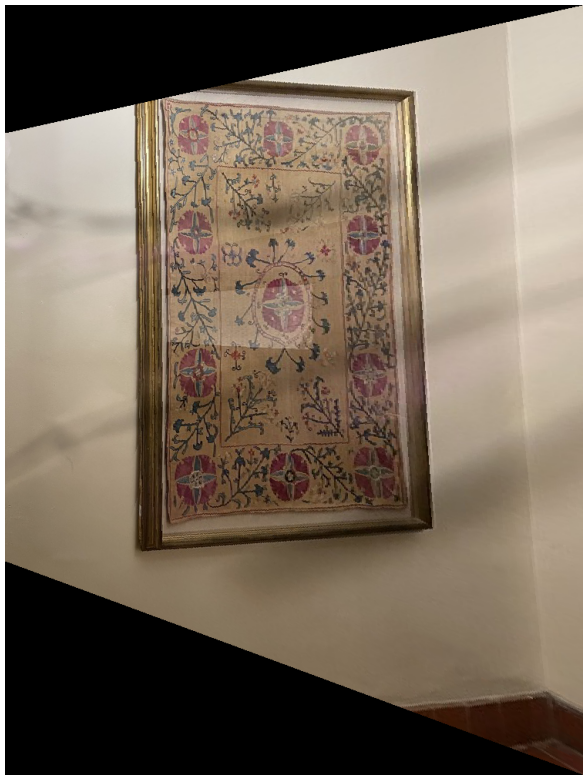
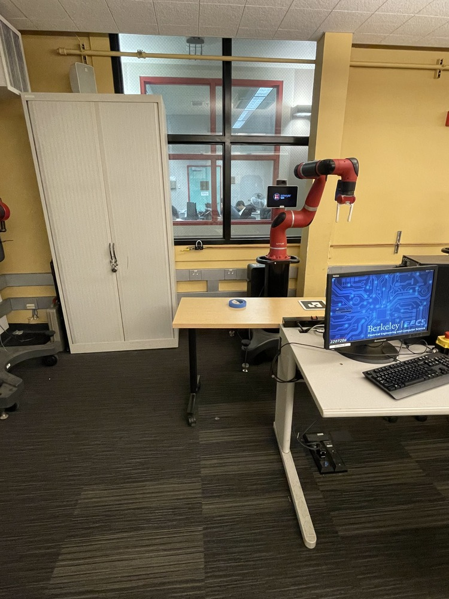

The homography matrix is a 3x3 matrix with 8 degrees of freedom that perform perspective transformation for 2 images. It is an important aspect of this project because in order to createa mosaics, we need images from the same perspective, and then blend them together. In order to achieve this, we need pictures with same center of projection. Then for this part of the project, we will hand select correspondance points between two images and compute the homography with these correspondance points. In homogenous coordinates, we have \(Hp = p')\, where:
$$ H = \begin{bmatrix} a & b & c \\ d & e & f \\ g & h & 1 \end{bmatrix}
This equation can be rearranged to obtain:
\begin{bmatrix} x & y & 1 & 0 & 0 & 0 & -x'x & -x'y \\ 0 & 0 & 0 & x & y & 1 & -xy' & -y'y \end{bmatrix} \dot \begin{bmatrix} a \\ b \\ c \\ d \\ e \\ f \\ g \\ h \end{bmatrix} = \begin{bmatrix} x' \\ y' \end{bmatrix}
Thus, to recover homographies with the correspondance points that we have, it is enough to vertical stack points to get the above form and run least squares to get the eight points that best match the above form, the append 1 to the (3, 3)th entry and reshape into 3x3 matrix.
The warping done in this part of the project is very similar to the warping in project 3 with some nuances. Since both images are of the same size in the my examples, with the inverse warping scheme, it is enough to take the inverse of the homography matrix and apply it to the corner coordinates of the image. Since the homography matrix is calculated as a forward homography from image 1 to image 2, this step finds the corner coordinates of image to projected onto the perspective of image 1. After this, I create a polygon that captures this new trapezoid and interpolate from image 2 to fill the trapezoid. However, this warping will likely result in negative corners, or corners that fall out of the range of image 1, however; before this part, coordinates should be normalized in all homography steps. The normalization is done by dividing the resulting x, y coordinates after the homography transformation by the weight, which is the third coordinate after the homography transformation. So I recalculate the x and y coordinates of the resulting image. I created two warp functions, one of which does the above functionality by calculating the min x, y and max x, y coordinate and create a grid appropriate to the resulting height and width of the combined image. The results of warping are under the image rectification section
This part consists of rectifying a trapezoidal part of the image into a rectangular shape to recover subtleties that are not immediately available in the original image. This is yet again a perspective transformation, so we can utilize a homography transformation again. In order to accomplish this, on the same image, I define correspondance by hand. Since I want to transform a trapezoidal part of the image to a rectangle, I select the corners of the trapezoid. Then on the same image with the same orientation, I select coordinates of a rectangle, where I determine the length of the sides by inspection. Afterwards, it is enough to recover the homography and warp the image according to the warping procedure above. The transparent black web like artifacts on the images are a result of a crack on my camera.
Perspective Ipad
Perspective portrait 1
Perspective portrait 2
Rectified Ipad with Info Theory notes
Rectified portrait 1
Rectified portrait 2
In order to create the mosaic, I leave image 1 unwarped and warp image 2 to image 1's perspective. The grid on which both images are displayed have dimensions calculated with the procedure described in the image warping part. After this, I find the polygon of points of intersection and hand choose the x coordinate according to this mask. Afterwards, I run the Laplacian Blending algorithm that I wrote in project 2 to blend the two images together.
Original image 1 of the piano room
Original image 1 of the piano room
Naive mosaic of the piano room
Original image 1 of Cory 105
Original image 2 of Cory 105
Naive mosaic of Cory 105
Original image 1 of Ihouse library with my computer
Original image 2 of Ihouse library with my computer
Naive mosaic of Ihouse library (arguably looks better than autostitching)
To calculate the corner points, I used the pre-implemented harris corner detector. The harris corner detector calculates a quadratic form by taking the outer product of the gradient of the image with a derivative of gaussian filter. Then, it creates a matrix of scores of the same size as the image:
$$ f_{HM}(x, y) = \frac{\det H_{l}(x, y)}{tr H_{l}(x, y}}
$$And in a square neighborhood, assigns the argmax to be an interest point.
Harris corners of the piano room image 1
Harris corners of Cory 105 image 1
Harris corners of Ihouse Library
As can be seen from the above results, the interest points are not uniformly distributed across the image grid and form clusters. Also, there exists two many of them to do anything meaningful in efficient time. One way to optimize this is to implement the Adaptive Non-Maximal Suppression Method, which is described by the optimization:
$$ r_i = \text{min}|x_i - x_j|, \text{s.t.} f(x_i) \le c_{\text{robust}} f(x_j), x_j \in I
$$In this equation, \(x_i\) and \(x_j\) are interest points that are calculated with the harris detector, f(.) is the harris score function, and I is a set of interest points and c_robust is constant less than 1. We basically find the point other than x_i that results in a strictly higher score than x_i and minimizes the distance between itself and x_i. Later we sort these interest point pairs with their resultant radius in descending order, and return a number of them with maximal radius, in my case 100. What this achieves is that we are spreading the number of interest points in a uniform manner on the grid and also depending on how many of the interest points we return, describe the correspondance points for the homography transformation with way less interest points that are spread uniformly over the grid without clusters, which helps us find the best features that describe the image according to the corner score function. I created a radius dictionary and a distance matrix (with the provided dist2 function) to calculate the distance between harris detected corners. I also flattened the selected interest scores that were chosen by the corners inputted into the function. Then for each corner, I listed out the corner indices that satisfy the constraint, then found the index that minimized the objective. Then, sorted the dictionary by keys which are radius, and returned the top 100 corners with the highest resultant radius and the result is below:
Around the interest points filtered by Adaptive Non-Maximal Suppression, I select patches of images which are 40x40 at first. Than I downsample them by 5 to create 8x8 images and standardize them by bias/gain normalization. Two examples of features are shown below:
I do feature extraction for both images that we are trying to blend into a mosaic. I then implemented the function feature_matching(descriptors1, descriptors2, points1, points2, threshold) The order of the descriptors and the points are the same. To evaluate feature matching, I used Lowe's trick. Namely, I found the first and second nearest neighbor of each feature of image1 in image2, by finding the two smallest features in image2 that minimize the euclidean distance between the patches. Then calculated the ration of dist(patch_1, NN1)/dist(patch_1, NN2) and if this ratio was below the threshold of 0.6, I appended the indices of patch_1 and NN1 to the result array, and returned the array. This results in an array of point pairs that we want to calculate the homography transformation with. I.e. we find the matching points.
The only thing left after this point is to find the homography between the images and warp the images as in the previous part and blend them into a mosaic. To estimate the homography, we use the RANSAC procedure. Namely, for some number of iteration (2000 in my case), we select four feature point pairs at random (calculated by the feature matching algorithm described above), then compute the 4 point homography between these points. Afterwards, with the recovered homography, for each point pair in the feature points pairs array, we calculate the p2' = Hp1 and calculate the distance between p2' with the actual p2 we have within the array and if it is below some threshold, we add this point pair into the inliers array. We iteratively ty to find the maximum number if inluers associated with a homography transformation resulted by the random four point pair selection. After we are done with the iterations, we recalculate the homography matrix with the point pairs in the final inliers array. With this homography matrix, we repeat the warping procedure described earlier and create the mosaic.
When I was a freshman at Berkeley, Professor John Denero was talking about cool applications of computer science in the first lecture of 61A. He showed us how homeland security was able to find license plates that were captured with intelligble perspectives. Being able to repeat this procedure with the image rectification part of this project was very cool and demonstrated to me how much I progressed in my Berkeley journey, which was cool.
Back to main page